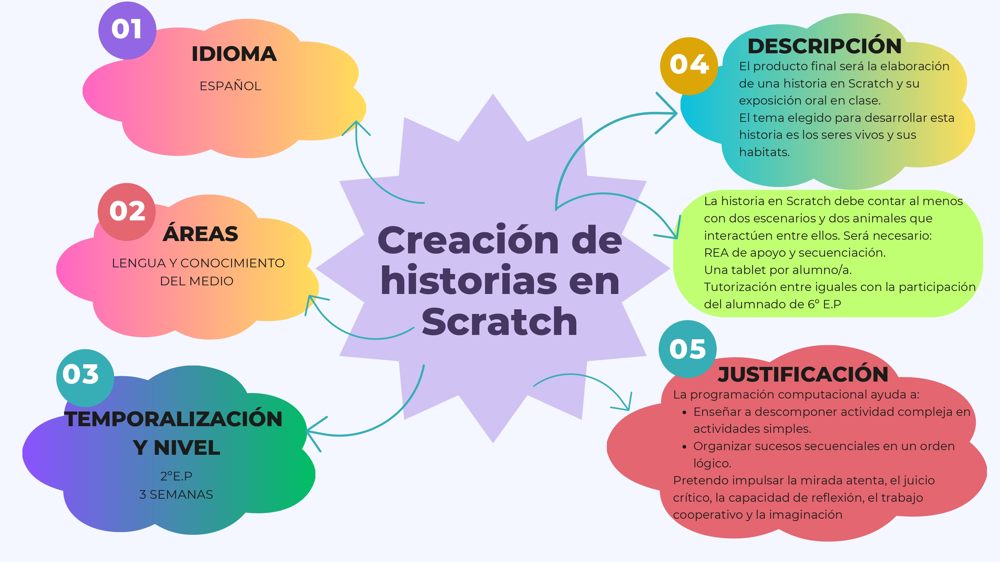

Situación de Aprendizaje
Esta situación de Aprendizaje consiste en diseñar y programar una historia interactiva, insertando distintos tipos de objetos. Los objetivos serán crear una historia, con distintos elementos, conocer las características mas importantes de los animales, conocer los principales bloques de programación de Scratch y conocer el entorno de Scratch: disfraces, escenario, objetos y movimientos.
